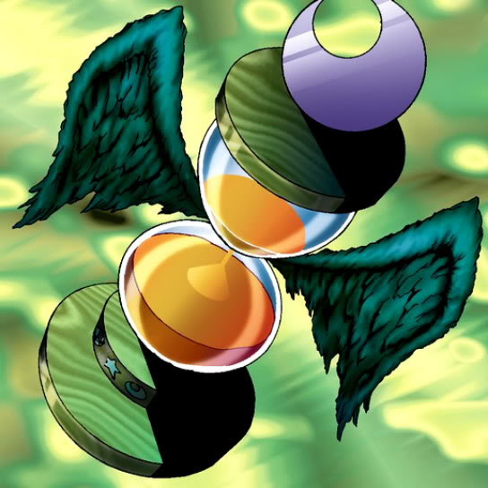

Hourglass of Courage

Description: "If LP is over 1000 points when this card is destroyed in battle, the strength of your monsters are increased by 1000 points, and your LP is reduced by 1000."
STATS
ATK: 1100
DEF: 1200DECK COST
Deck Cost per Card: 28EFFECT NOT IMPLEMENTED
Fusion List (11 Possible Fusions)
- Hourglass of Courage + Dancing Elf = Dark Witch
- Hourglass of Courage + Fairy's Gift = Dark Witch
- Hourglass of Courage + Goddess of Whim = Dark Witch
- Hourglass of Courage + Harpie Lady = Winged Egg of New Life
- Hourglass of Courage + Ill Witch = Dark Witch
- Hourglass of Courage + Injection Fairy Lily = Dark Witch
- Hourglass of Courage + LaMoon = Dark Witch
- Hourglass of Courage + Lunar Queen Elzaim = Dark Witch
- Hourglass of Courage + Magician of Faith = Dark Witch
- Hourglass of Courage + Mystical Elf = Dark Witch
- Hourglass of Courage + The Unhappy Maiden = Dark Witch